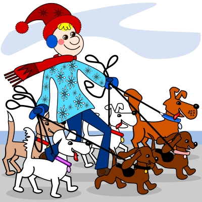

Dog Walking Service
Our professional and reliable dog walking service.

Dogs require physical and mental stimulation. It energises their body, mind and spirit. Some behavioural problems can be the result of bored dogs and we would like to help you ensure this is not the case with your dog. Are you out all day at work? Perhaps you just need extra help with your dog? We can offer your dog something they can look forward to every day.
Your dog will collected from your home, place of work or wherever you choose. We will transport them safely in our unmarked vehicle to walk in some of the beautiful nearby woodlands, ponds and canals. Once there they will be able to play and socialise with other dogs and you can be assured that your dog is having lots of fun! Your dog will be secure and safe at all times. We will allow them to socialise with other dogs because we believe this is great for their development and encourages good behaviour and stimulation.
Our walking ratio will not exceed four dogs to a walker. We will always try to ensure the group of dogs being walked is planned around their temperament and tolerance of other dogs. However, if you prefer, we are able to walk your dog on a one to one basis. We will always make sure that your dog will walk in a relaxed happy environment.
For the dogs we walk on a regular basis we will vary their walks to keep things as interesting and stimulating for them as possible. We do also appreciate that you want your best friend to have lots of fun which might involve playing in mud and puddles. If this occurs we will endeavour to wipe down and towel dry your dog so that they do not shake off the mud and water in your home.
We are currently running a promotion for new customers offering 50% off dog walks for the first month. Contact us for further details.
Our Location We also cover the surrounding areas!
We are based in Fleet, Hampshire but cover the following postcode areas:
- GU51 Fleet and Elvetham Heath
- GU52 Church Crookham and Crookham Village
- GU14 Farnborough, Cove
- GU16 Frimley, Frimley Green, Deepcut, Mytchett